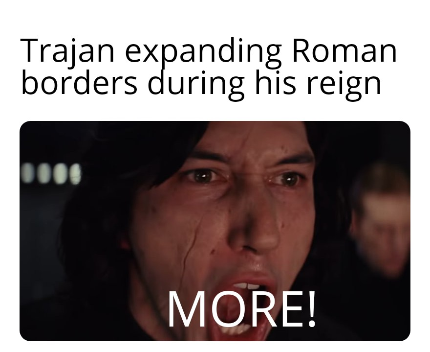

also known as Optimus
"As Trajan, I am proud to say that I am one of the greatest Roman emperors in history. I dedicated my reign to expanding the Roman Empire and ensuring its prosperity, as well as promoting good governance and justice. Under my leadership, the Roman Empire reached its greatest territorial extent, and my policies and reforms improved the lives of Roman citizens. My military campaigns against the Dacians and Parthians were successful, and I was able to bring wealth and resources back to Rome. I also focused on public works, such as the construction of the Trajan's Forum and Trajan's Column, which continue to inspire awe and admiration to this day. Furthermore, I valued the rule of law and worked to reform the legal system to promote fairness and justice. I believe that my achievements as an emperor demonstrate my commitment to the Roman people and my ability to lead them to greatness."
"Also, you should definitely consider hiring the Kraken, since although he is still a beginner, I think he shows reasonable talent for coding"